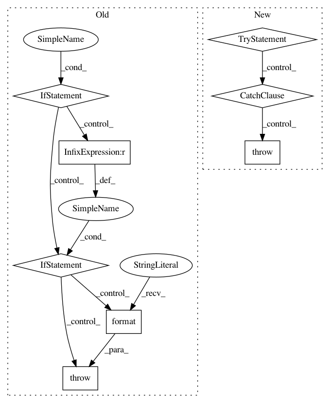

d323c65240afc7a47c7c42fdcadb57d70fab1157,src/python/pants/backend/python/tasks/pytest_run.py,PytestRun,_maybe_shard,#PytestRun#,173
Before Change
return
components = shard_spec.split("/", 1)
if len(components) != 2:
raise self.InvalidShardSpecification("Invalid shard specification "{}", should be of form: "
"[shard index]/[total shards]".format(shard_spec))
def ensure_int(item):
try:
return int(item)
except ValueError:
raise self.InvalidShardSpecification("Invalid shard specification "{}", item {} is not an "
"int".format(shard_spec, item))
shard = ensure_int(components[0])
total = ensure_int(components[1])
if not (0 <= shard and shard < total):
raise self.InvalidShardSpecification("Invalid shard specification "{}", shard must "
"be >= 0 and < {}".format(shard_spec, total))
if total < 2:
yield []
return
After Change
yield []
return
try:
sharder = Sharder(shard_spec)
if sharder.nshards < 2:
yield []
return
with temporary_dir() as tmp:
path = os.path.join(tmp, "conftest.py")
with open(path, "w") as fp:
fp.write(dedent(
def pytest_report_header(config):
return "shard: {shard} of {nshards} (0-based shard numbering)"
def pytest_collection_modifyitems(session, config, items):
total_count = len(items)
removed = 0
for i, item in enumerate(list(items)):
if i % {nshards} != {shard}:
del items[i - removed]
removed += 1
reporter = config.pluginmanager.getplugin("terminalreporter")
reporter.write_line("Only executing {{}} of {{}} total tests in shard {shard} of "
"{nshards}".format(total_count - removed, total_count),
bold=True, invert=True, yellow=True)
.format(shard=sharder.shard, nshards=sharder.nshards)))
yield [path]
except Sharder.InvalidShardSpec as e:
raise self.InvalidShardSpecification(e)
@contextmanager
def _maybe_emit_junit_xml(self, targets):
args = []
xml_base = self.get_options().junit_xml_dir
In pattern: SUPERPATTERN
Frequency: 4
Non-data size: 8
Instances
Project Name: pantsbuild/pants
Commit Name: d323c65240afc7a47c7c42fdcadb57d70fab1157
Time: 2016-03-14
Author: benjyw@gmail.com
File Name: src/python/pants/backend/python/tasks/pytest_run.py
Class Name: PytestRun
Method Name: _maybe_shard
Project Name: cornellius-gp/gpytorch
Commit Name: d71bc3c8b533c319e49cf6b347d13c48c925ea93
Time: 2019-03-18
Author: gpleiss@gmail.com
File Name: gpytorch/utils/getitem.py
Class Name:
Method Name: _compute_getitem_size
Project Name: stanford-mast/nn_dataflow
Commit Name: 4fb88fdc63292d93ce2fdbbf77a4043f18b2c769
Time: 2017-05-03
Author: mgao12@stanford.edu
File Name: nn_dataflow/Network.py
Class Name: Network
Method Name: _merge_symbol
Project Name: polyaxon/polyaxon
Commit Name: 8d4140e264a0a47d3d690a5adc6386c027e2f8e2
Time: 2019-07-13
Author: mouradmourafiq@gmail.com
File Name: polystores/stores/gcs_store.py
Class Name: GCSStore
Method Name: parse_gcs_url